ネオンの光が好き
暗い画面に光る線だけが浮かぶ、ネオンサインのような見た目。
HORIKE HAYATO — GAME PROGRAMMING PORTFOLIO
強化を重ねて最深部を目指す、
ネオン調のローグライトアクション。
暗い画面に光る線、にじむ光。好きな表現を、
シェーダーから自作エンジンでゲームにしました。
PLAY CAPTURE / 2026.10
01
WHY THIS GAME
暗い画面に光る線だけが浮かぶ、ネオンサインのような見た目。
ブルームで光がふわっと広がる、あの柔らかさを自分で作りたい。
だから
暗いステージ、光る線、にじむ光。
「好きな表現」をそのままゲームに。
光る線が主役の画面を、シェーダーから自作エンジンで作っています。
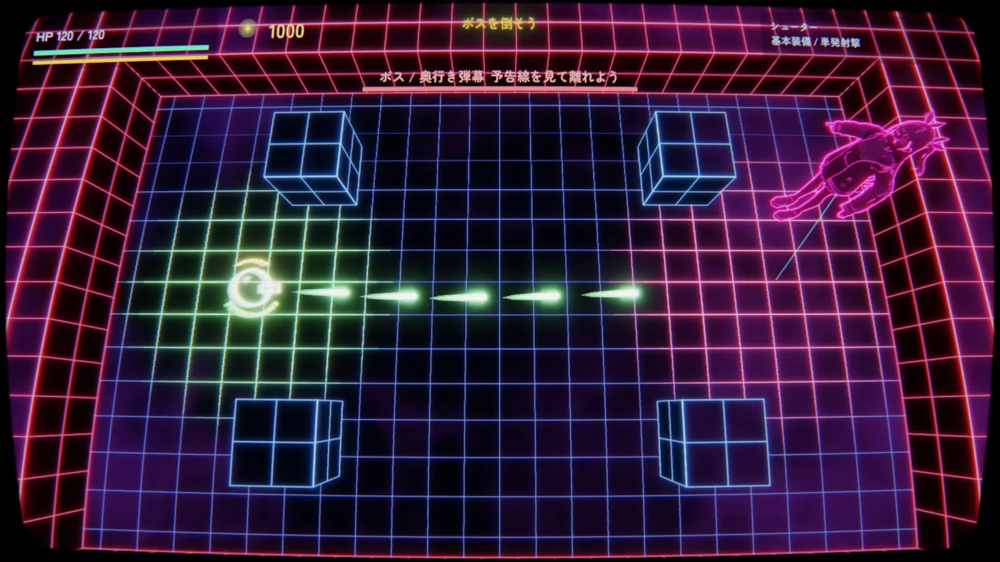
02
CURRENT BUILD
タイトル→戦闘→強化→ボス→遠征成功
開発初期
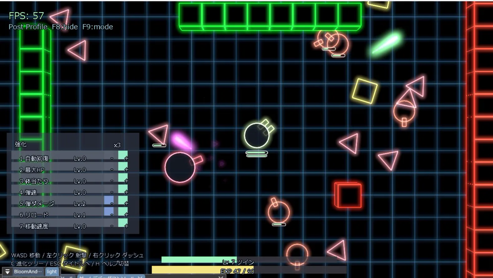
現在
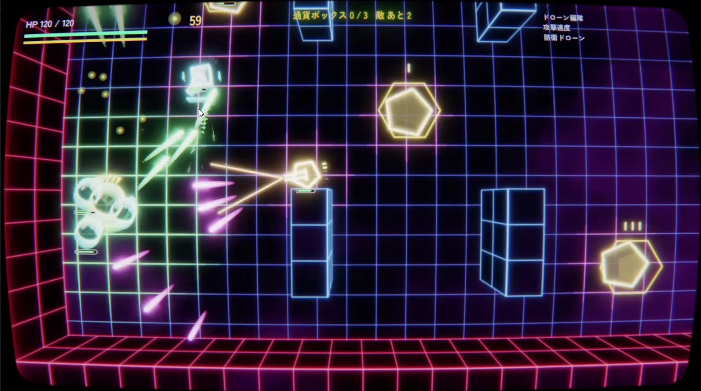
FULL PLAYTHROUGH
タイトルからボス撃破、遠征成功まで編集なしで収録しています。
03
GAMEPLAY
戦・宝・改・修理から行き先を選ぶ
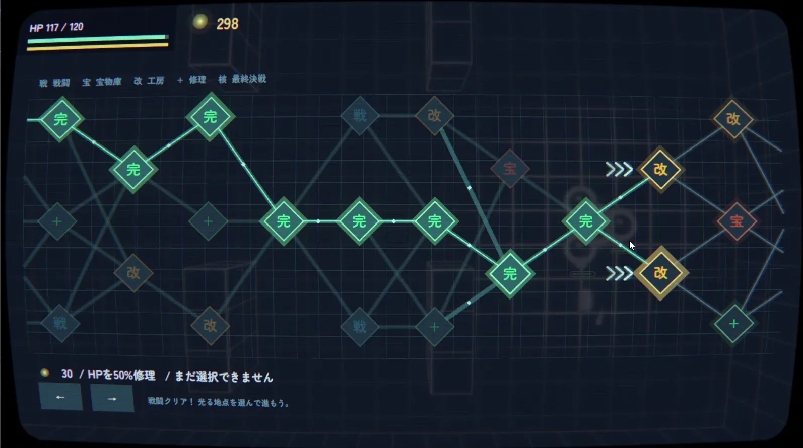
戦闘クリア → 次の地点へ
敵とブロックを倒す／通貨ボックスを回収する。
縦に積んだブロックが遮蔽物になる。
強化・修理に使う。
強化を選ぶ
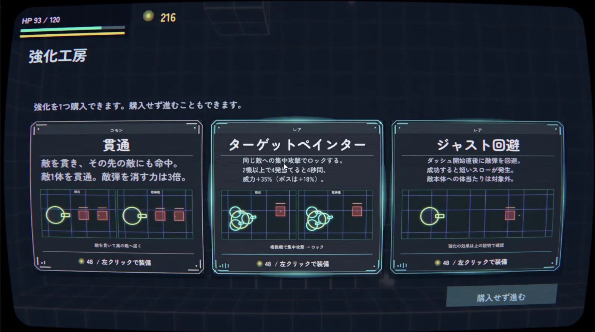
強化後の戦闘
敵を貫いて奥にも当たる
壁で弾が跳ね返る
ダッシュ後に連射が速く
ドローンの狙いが正確に
予告線を見て避け、攻撃の後のスキに床のコアを攻撃する——というリズムで組んでいます。
第1段階：降下突撃・奥行き弾幕
第2段階：床接続ビーム → 撃破
登場：寄り → 引きで戦闘へ
撃破：寄り → 連続爆発 → タイトル
04
BEHIND THE SCREEN
ブルーム OFF
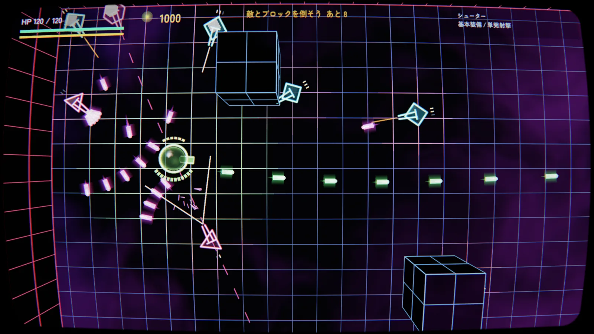
ブルーム ON
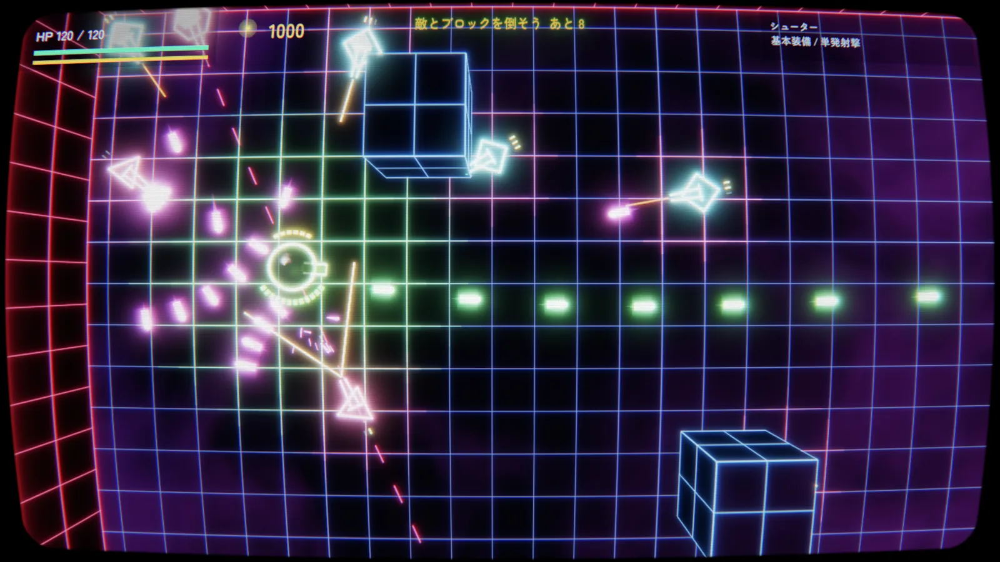
前回1回ぼかして加算 → 今回段階的に重ねて、柔らかく広がる光に
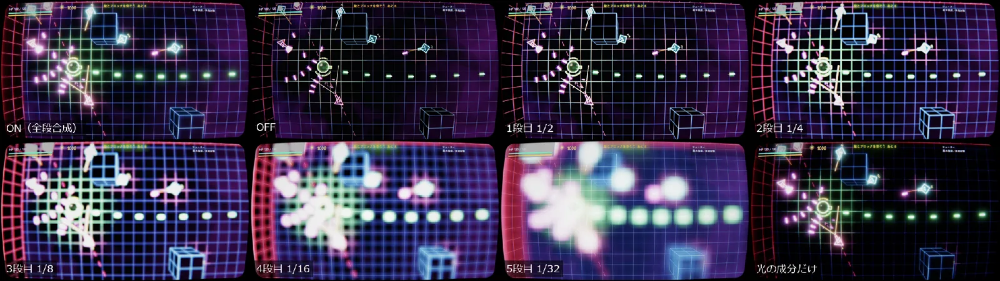
線のすぐそばの、細く鋭いにじみ。
画面に広がる、大きく柔らかいにじみ。
B で表示を切替、V で一時停止して同じ瞬間を見比べられます。
全部を足すことで、芯のくっきりした光と広いにじみを両立。
↻ 毎フレームくり返す → 光が尾を引く
ダッシュや弾の光が尾を引くように見えます。最後にUIも含めた画面全体へ湾曲・走査線をかけて、ブラウン管風に仕上げています。
普通の3Dモデルを、暗い本体と光る線だけで描いています。
待機 → 攻撃 → 回転
撃破時のディゾルブ
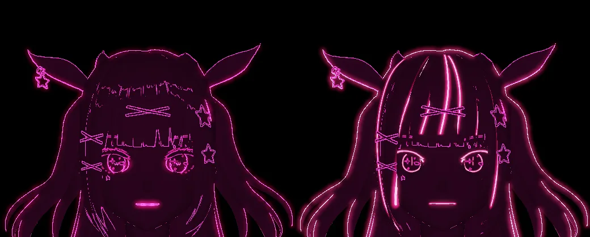
コンピュートシェーダで更新、ExecuteIndirectで描画。
ボスのアニメーション、ステンシルで輪郭を描く。
ノイズで溶けるように消える。
影と物理ベースのライティング。
コンピュートシェーダで波の高さを計算。
画面の深度・法線から陰影と反射を計算。
※ エンジン側で実装済みの機能（本編で使っていないものを含む）
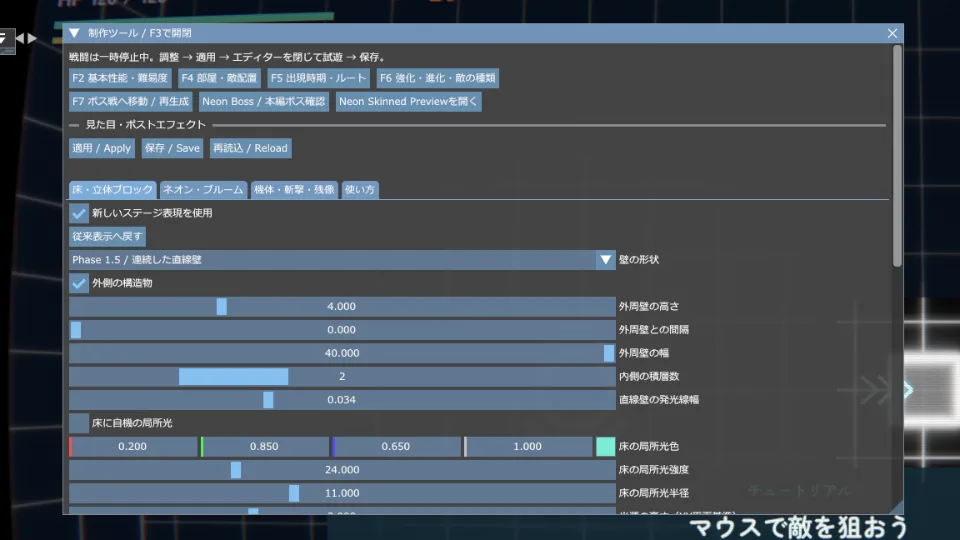
武器・発光・敵・HUDなどの値をImGuiでその場で変更し、JSONへ保存・読み込み。調整のたびにコードを書き換えて再ビルドする手間を減らしています。
05
WHAT'S NEXT
遊べる形にはなりました。ゲームとしても技術としても、まだ足りないところを4つ挙げて、次の一手を決めています。
①
部屋の形はテンプレートから選ぶだけで、敵の配置・出方も毎回同じ。2回目以降は展開が読めてしまう。
「ローグライトなのに毎回同じ」をなくす
②
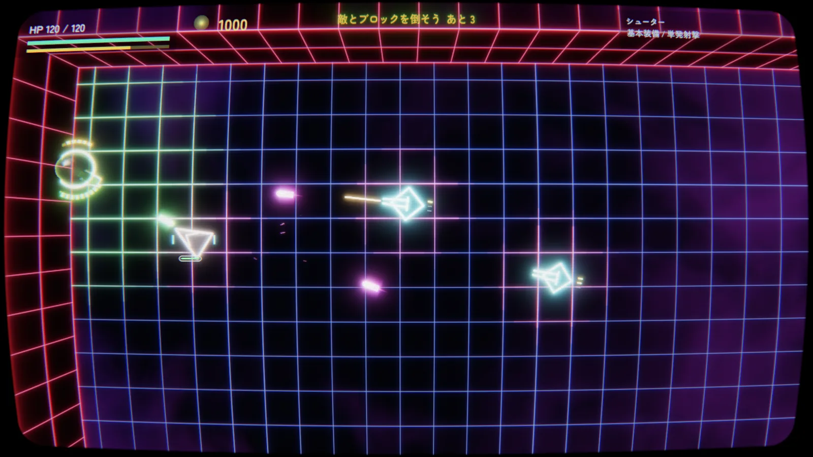
すべてが光るので、HPバーやHUDが埋もれる。ダメージを受けたかが分かりにくい。
「きれい」と「分かりやすい」を両立させる
③
今ある3Dはネオンの線画だけ。リアル / アニメ調の3Dに必要な機能はまだ入っていない。
このゲームと並行して、3D表現を見せるゲームか技術デモを作る
④
自分以外が使ったことがなく、ゲームの中身は全部C++で書く。外から触れるのはJSONの数値調整だけ。
「自分専用の道具」から「人が使えるエンジン」へ
06
TEAM PROJECT


カードで戦い、場に残ったカードでポーカーの役をそろえるカードバトル。チームの中で、GPUパーティクルとポストエフェクトを担当しました。
GPUパーティクル・ポストエフェクト
自作エンジン / DirectX 12
ゲーム全体はチーム制作です。画像は担当した演出に関連する場面です。
07
ABOUT
C++ / DirectX 12を中心に、個人制作とチーム制作に取り組んでいます。好きな表現をシェーダーから自分で作り、それをゲームの中で「遊べる」形にするところまでを大切にしています。